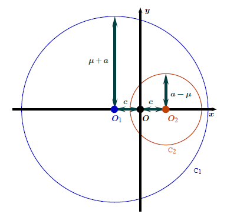

The torus and the elliptic cyclide
The most used parameterization of the ordinary torus (the donut) is: \[ \textrm{torus}_{R,r}(u, v) = \begin{pmatrix} (R + r \cos v) \cos u \\ (R + r \cos v) \sin u \\ r \sin v \end{pmatrix}. \]
The elliptic Dupin cyclide is a generalization of the torus. It has three nonnegative parameters \(c < \mu < a\), and its usual parameterization is, letting \(b = \sqrt{a^2 - c^2}\): \[ \textrm{cyclide}_{a, c, \mu}(u, v) = \begin{pmatrix} \dfrac{\mu (c - a \cos u \cos v) + b^2 \cos v}{a - c \cos u \cos v} \\ \dfrac{b (a - \mu \cos u) \sin v}{a - c \cos u \cos v} \\ \dfrac{b (c \cos v - \mu) \sin u}{a - c \cos u \cos v} \end{pmatrix}. \] The picture below shows such a cyclide in its symmetry plane \(\{z = 0\}\):

For \(c=0\), this is the torus.
Here is a cyclide in 3D (image taken from this post):

I think almost everything you can do with a torus, you can do it with a cyclide. For example, a parameterization of the \((p,q)\)-torus knot is \[
\textrm{torus}_{R, r}(pt, qt), \qquad 0 \leqslant t < 2\pi.
\] Then, the \((p,q)\)-cyclide knot is parameterized by \[
\textrm{cyclide}_{a, c, \mu}(pt, qt), \qquad 0 \leqslant t < 2\pi.
\] 
Here is a cyclidoidal helix:

And here is a rotoid dancing around a cyclide:

I found the way to do this animation for the torus on this website, and then I adapted it to the cyclide.
The R code used to generate these animations is available in this gist.